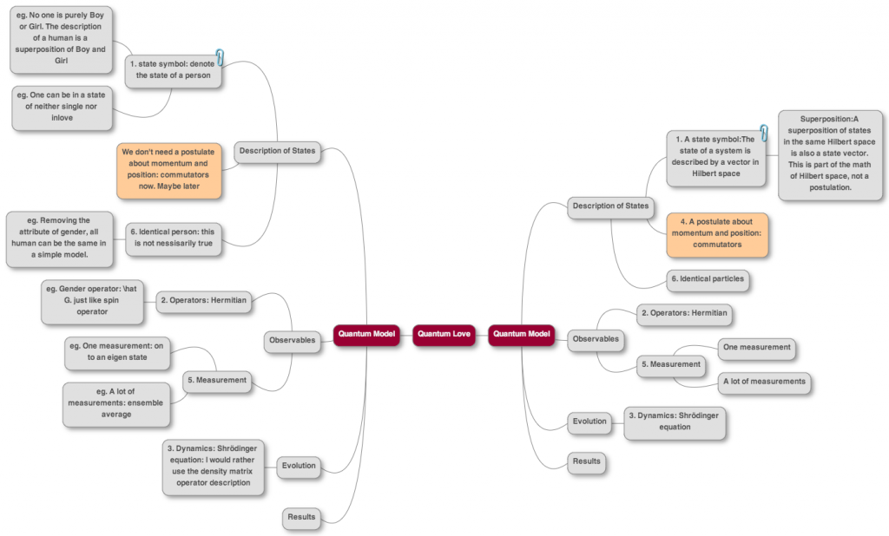

爱情的量子理论2
$$\newcommand{\bra}[1]{\left\langle #1\right|}
\newcommand{\ket}[1]{\left| #1\right\rangle}
\newcommand{\braket}[2]{\langle #1 \mid #2 \rangle}$$
系列文章目录：
第一篇：爱情的严格量子力学描述
第二篇：爱情的量子理论2
第三篇：心理叠加态：从量子爱情到人的所有心理
第四篇：基于统计数据的量子爱情
这是系列文的第二篇，第一篇在此：爱情的严格量子力学描述
之前写过 爱情的严格量子力学描述，由于只是初步想法，所以很多事情没有说清楚。这篇文章就尝试把这些概念弄清楚。所要讨论的大致包括主要假设的确定，状态的描述，演化方程以及结果的提取。
总的说来，思路是这样的，我们提取了量子力学里面的一些方法，然后找出合适的方法来描述爱情。总结在一个 Mindmap 中，是这样的：

( Quantum Theory of Love，源文件在此：Mindmap of QuantumLove@GitHub，可以用这个 Mindmup 看。)
基本假设
上面那个 Mindmap 做成英语的是因为打算跟系里的人讨论，为了方便阅读，做一个中文的表格吧。
| ~ | 量子力学 | 爱情理论 | 爱情中的例子 |
|---|---|---|---|
| 状态描述 | Hilbert 空间的态矢 | Hilbert 空间态矢 | $\ket{\mathrm{Boy}} + \ket{\mathrm{Girl}}$ |
| 对易子 | $[\hat x, \hat p]=\mathrm i \hbar$ | （似乎暂时不需要） | ~ |
| 全同粒子 | 粒子交换算符作用 | 同样要考虑人的全同性1 | 性别单态和三重态1 |
| 算符 | Hermitian 的算符 | 待讨论2 | ~ |
| 测量 | 坍缩或退相干 | 坍缩或退相干 | $\ket{\mathrm{Boy}}\bra{\mathrm{Boy}}$ 作用在 $\ket{\mathrm{Boy}} + \ket{\mathrm{Girl}}$ 上态会变成 $\ket{\mathrm{Boy}}$ 因为这是此算符的本征态 |
| 演化 | Schrödinger 方程；密度算符 | Schrödinger 方程；密度算符 | $\mathrm i \hbar = [\hat H, \hat \rho]$ |
这里面比较重要的是态的描述、测量和演化。
态的描述中提到了一个人的状态是 Hilbert 空间的态矢，这非常重要，因为这样一来，同一个空间中的态的线性叠加还是这个空间中的一个态。也就是说这允许我们这样来描述性别和爱情状态的叠加态。
我们为什么要把性别描述成叠加态呢？因为从心理上来看，男性心理和女性心理之间的区别并不是那么大。但是从测量上来看，我们需要一个性别的算符，因为这是我们关心的事情：男孩暗恋女孩、女孩爱着男孩。所以性别是我们喜欢用的态空间，即
$$ \{\ket{\mathrm{Boy}},\ket{\mathrm{Girl}} \} $$
用花括号括起来的态来表示空间，意思是这两个态以及他们的线性组合。
所以如果我们写下一个态，
$$C_1 \ket{\mathrm{Boy}} + C_2 \ket{\mathrm{Girl} }$$
表示一个人是有 $|C_1|^2$ 成分的男孩和 $|C_2|^2$ 的女孩组成的。我个人觉得这是通常的一种情况吧，有时候像个男孩，有时候像个女孩。
这样当我们测量性别本征态的时候，单次测量的结果是以 $|C_1|^2/(|C_1|^2 + |C_2|^2)$ 的概率出现男孩，$|C_2|^2/(|C_1|^2 + |C_2|^2)$ 的概率出现女孩。
那么，你会问，我们的算符应该是什么样呢？
回忆一下，在 Stern Gerlach 实验中，对于自旋 1/2 的电子测量的时候，如果使用了 Pauli 矩阵，
$ \sigma_z = \begin{pmatrix}1 & 0\\ 0 & -1\end{pmatrix}$
同样，我们可以使用 $\{ \ket{\mathrm{Boy}},\ket{\mathrm{Girl}} \}$, 然后处在男孩态可以写成 $(1,0)^T$。那么测量男孩女孩就对应于
$ G_z = \begin{pmatrix}1 & 0\\ 0 & -1\end{pmatrix}$
我们会发现男孩女孩态正好是这个算符的本征态。
对于演化，通常的 Hamiltonian 是不含时间的，所以我们可以定义一个非常简单的幺正的算符，Propagator, $\hat U(t,t_0)$，可以把一个状态从 $\ket{\mathrm{\psi(t_0)}}$ 演化到 $\ket{\mathrm{\psi(t)}}$ ，不含时间的 Hamiltonian 对于的 propagator 比较简单，就是
$$\hat U(t,t_0) = e^{-\mathrm i \hat H (t-t_0)/t}$$
所以，到目前为止，只要我们找出合适的 Hamiltonian，剩下的问题（一般而言）就是解方程了。
态的解释
解释(interpretate)一个态是什么意思，在我们在一个领域中引入新的方法的时候变得非常重要，因为无论如何，我们至少应该能够跟对应的具体的问题对应起来。
之前我们引入了直积，并且提到了两个人放在一起可以组成两类状态，一类是性格三重态，其中一种是
$$\ket{\psi_{t0}} = \frac{1}{\sqrt{2}} (\ket{\mathrm{Boy}}\ket{\mathrm{Girl}} + \ket{\mathrm{Girl}}\ket{\mathrm{Boy}} )$$
另一类是性格单态，
$$\ket{\psi_{s}} = \frac{1}{\sqrt{2}} (\ket{\mathrm{Boy}}\ket{\mathrm{Girl}} – \ket{\mathrm{Girl}}\ket{\mathrm{Boy}} )$$
这里面有了纠缠，就是说如果现在有两个人，他们处在 $\ket{\psi_{t0}}$ 态，那么如果我们通过测量知道一个人是 $\ket{\mathrm{Boy}}$ 态，那么另一个人必然是 $\ket{\mathrm{Girl}}$ 态。这个结果是不是说的过去，我并不是非常的确定。从豆瓣的一些帖子或者我说来看，似乎给我一种印象是，爱情中的两个人似乎常常是一个偏女性，一个偏男性，这么说来似乎也说的过去。另外一对情侣，常常是一个主内一个主外，两个同时主内或者两个同时主外，似乎会有冲突，从波函数来看，同时发现他们主内或者同时发现他们主外的概率是零。
这就是所谓的 Pauli 不相容原理。根源上还是人的全同性，即，在我们的简单的模型中，如果爱情状态波函数相同，去掉了性别属性波函数，剩下的是完全相同的，把他们混在一起，是无法区分两个人的。例如，两个人的爱情状态都是单身，
$$\ket{p_1} = \ket{\mathrm{Single}}$$
$$\ket{p_2} = \ket{\mathrm{Single}}$$
那么我们把这两个人自由的放在一起（等价于说体系的 Hamiltonian 是 $\hat H = \hat H_1 + \hat H_2$），不考虑性别状态，总的波函数应该是，
$$\ket{\psi(1,2)} = \ket{\mathrm{Single}}\otimes \ket{\mathrm{Single}}$$
是么？显然不一定。取决于性别状态波函数是什么样子的。
一个比较有趣的情形是，如果两个人处在性别三重态上，性别波函数是对称的，由于总的波函数应该是反对称的，两个人组成的体系的爱情状态应该是
$$\ket{L} = \frac{1}{\sqrt{2}}( \ket{\mathrm{inLove}}\ket{\mathrm{Single}} – \ket{\mathrm{Single}}\ket{\mathrm{inLove}} )$$
我们不能同时发现两个人处在相同的状态上，在现实中，可以解释为，如果两个人处在性别三重态，那么两个人不能同时 inLove 或者同时 Single。物理问题中，原因当然是交换算符的作用。那么现实中原因是什么呢？可以理解为，这种情况可以理解为单恋。
如果两个人处在性别单态上，那么
$$\ket{L} = \frac{1}{\sqrt{2}}( \ket{\mathrm{inLove}}\ket{\mathrm{Single}} + \ket{\mathrm{Single}}\ket{\mathrm{inLove}} )$$
对应单恋，
或者
$$\ket{L} = \ket{\mathrm{inLove}}\ket{\mathrm{inLove}}$$
对应两人相爱，
再或者
$$\ket{L} = \ket{\mathrm{Single}}\ket{\mathrm{Single}}$$
两人对对方相互没感觉。
这里可以看到，虽然，性别三重态显然决定了两个人不能相爱，但是到底两个人是相爱、单恋还是对对方无感，并不仅仅取决于性别态，因为处在性别单态的两个人，可以有三种可能情况。
到现在位置，我们讨论了很多状态的描述和解释，以及测量的问题。另外一个大问题是演化的问题，这也涉及到如何让两个原本不想爱的人相爱，如何让爱你的人爱上你，如何让爱你的人变得不爱你这样的问题。关于这些，我会写在量子爱情系列的下一篇中。
这是系列文的第二篇，第一篇在此：爱情的严格量子力学描述
- 之前的文章中提到了：爱情的严格量子力学描述。 ↩ ↩
- 由于暂时没有实数本征值的需求，索要待讨论。 ↩

{kind=link}
最近评论